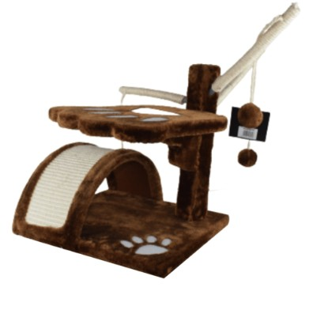

Gimnasio Mediano
Precio: $130.000
Descripción:
El Gimnasio Mediano es una estructura de varios niveles que ofrece plataformas a distintas alturas, túneles y cuevas para estimular el juego, la curiosidad y la actividad física de tu gato. Ideal para hogares con uno o varios felinos.
Características principales
- Varios niveles y plataformas para saltar, trepar y descansar.
- Túneles y cuevas para esconderse y explorar.
- Materiales resistentes y seguros para gatos.
- Fácil de montar y limpiar.
- Incluye rascadores para el cuidado de las uñas.
Beneficios
- Estimula el ejercicio y el juego en gatos de todas las edades.
- Ayuda a prevenir el aburrimiento y el estrés.
- Proporciona un espacio propio y divertido para tu mascota.
Dimensiones aproximadas
- Alto: 110 cm
- Ancho: 60 cm
- Profundidad: 50 cm
Recomendado para:
- Gatos de todos los tamaños
- Hogares con varios gatos
Preguntas frecuentes
- ¿Es estable? Sí, su base ancha y materiales robustos garantizan estabilidad.
- ¿Se puede limpiar fácilmente? Sí, los materiales permiten una limpieza rápida y sencilla.